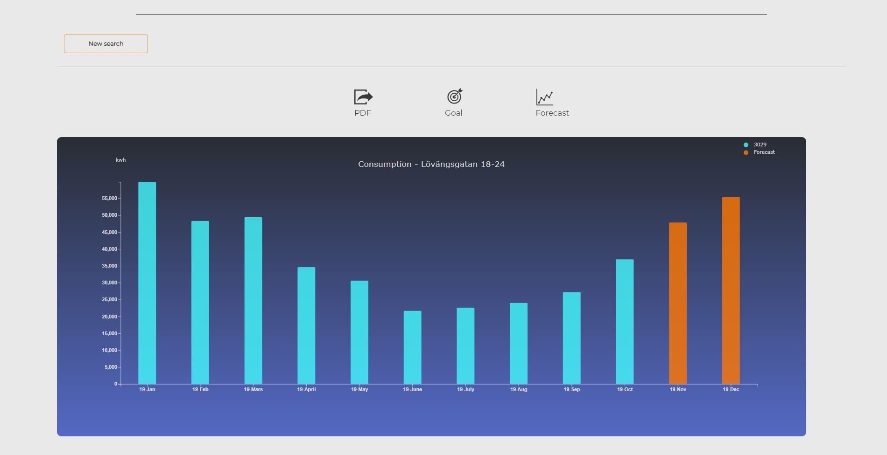
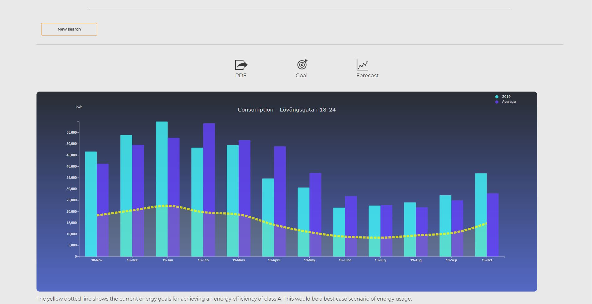
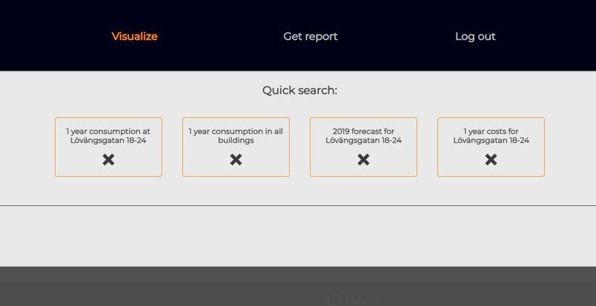
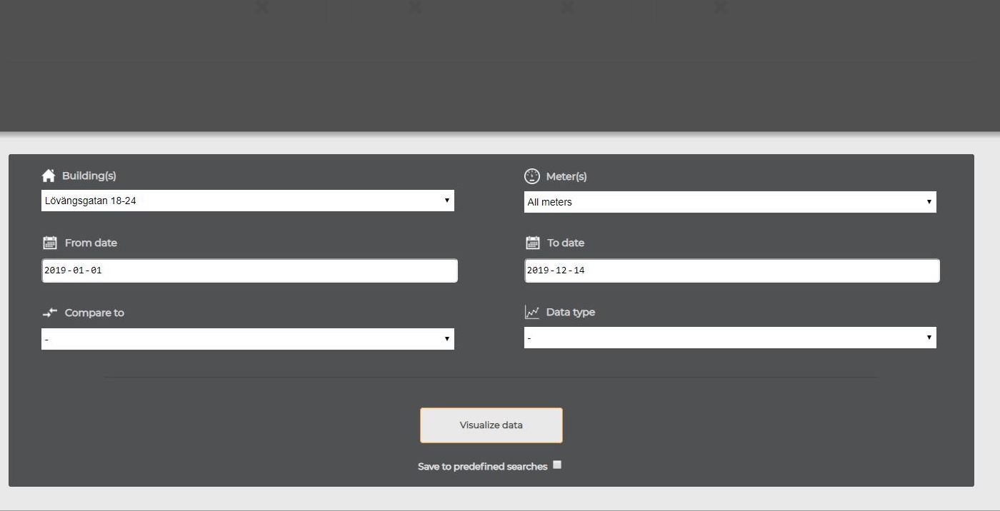
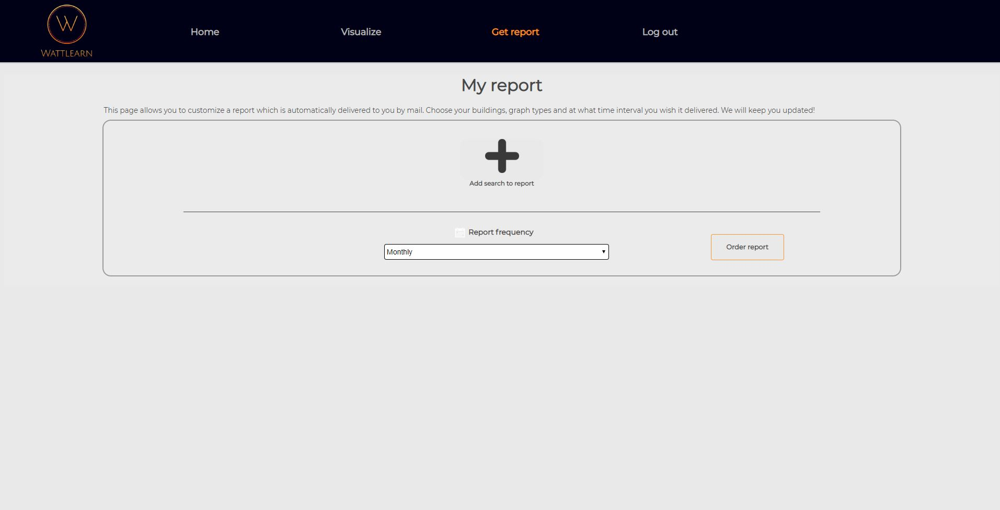

A simple yet powerful energy visualization tool for property managers
Wattlearn is a simple yet powerful energy visualization tool developed to maximize the value for the user. It is a result of a project done in collaboration with Stockholm City. Stockholm City believe that in order to reduce energy consumption, it is important that the energy data easily can be visualized and analyzed.
However, consumption data a scarce resource. Therefore our idea was to create a platform would entice users with the an intuitive and functional service in order to collect data. In order to do this, needs and wants presented during discussions with property managers were implemented. Whether you want to display multiple facilities at once in a comprehensive way, or forecast your future consumption, Wattlearn has you covered by being an all-in-one solution.
"How should a platform visualizing energy consumption be designed and technically implemented in order to provide value for tenant-owner associations, public housing companies and Stockholm City respectively?"
GitHub RepositoryBeginning as a pre-study about sustainability, ending up as a proof-of-concept prototype derived using a user-centric design process.
In this phase general information was collected from interviews and literature regarding sustainability in general. We also familiarized with the Stockholm Royal Seaport project in order to work with the goals and ambitions of it during our project. The phase ended with a problem definition
In the second phase we decided what type of solution we should create and for who it was intended. The decision landed in a visualization tool for energy consumption and the target group was property managers. The phase concluded with a primitive alpha prototype.
In the third and final phase consisted of refining the solution by performing think-aloud excercises with intended users and utilizing the expressed feedback to perform changes. The outcome of this phase was the final prototype.
Get insights on what our service offers. These are some of the functionalities available on the platform.
A sought after feature that, using superimposed line graphs, displays consumption of multiple buildings - either total consumption or weighted against the surface area.
Sustainability is all about proactive work, predict your consumption and get the opportunitiy to take action before any damage is done.
You now have an intuitive and easy way to follow up on how well your building actually follows the set goals of SRS.
Don't waste your time filling in the same search forms over and over again, add your searches to buttons and control your consumption within a click.
Perform precise data extraction through our truly customizable search engine and obtain exacly what you need.
Recieve a report every day, week, month or year. Included in the report is a collection of graphs, based on the your preferences, combined with a short text containing relevant information about your consumption.
That, together with Stockholm City, launch this project and distribute our platform to any property manager that has data to be visualized.
{kind=link}
{kind=link}
{kind=link}
{kind=link}
{kind=link}
{kind=link}